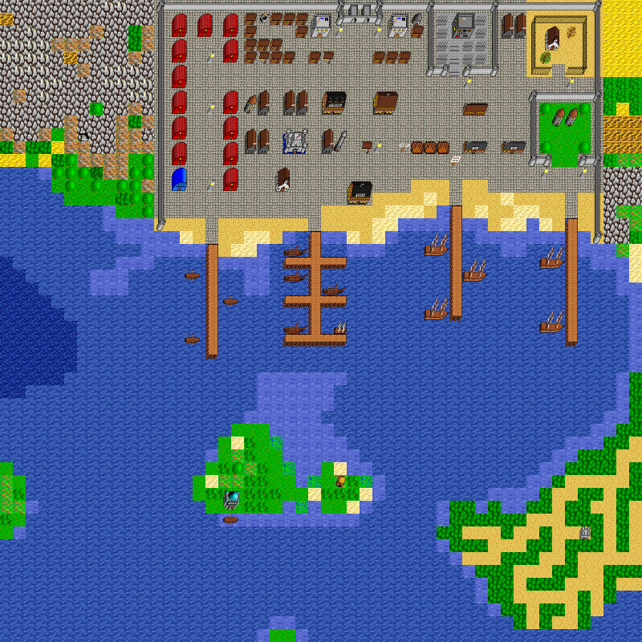

world_128_109
Map world_128_109, in region The Port of Wolfsburg. Map level: 1.
Map view:

(click for larger view)
Exits from this map:
- Acme Building Supply of Wolfsburg
- Bank of Wolfsburg
- Castle of Magara, Entrance
- Dank House, Cellar
- Dolphin's Delight
- Guild of Damned Heretics, Main Floor
- Guild of Damned Heretics, Storage Room
- High Tower, Level 1
- Lursendis's house
- Old Tower, Entrance
- Personal Pet Apartment, Entrance
- Preno's house
- Reticent Temple, Enterance
- Run-down Church
- Seaside Tavern, Dungeon
- Short Tower, Level 1
- Shrine to Gnarg
- Slave Pit 1
- Slave Pit 2
- Slave Pit 3
- Stairs Down to Cellar
- Temple of Ixalovh
- The Bloody Cutlass
- The Eternal Reward
- Twin Towers, West Tower Level 1
- Warehouse
- Well to Catacombs, Level 1
- Wolfsburg Apartment
- Wolfsburg Gate House
- Wolfsburg Imperial Post Office
- Wolfsburg Prison
- Wolfsburg Provisions
- Wolfsburg's Ye Olde Shoppe of Transport
- world_116_102
- world_122_116
- world_127_109
- world_128_101
- world_128_107
- world_128_108
- world_128_109
- world_128_110
- world_129_107
- world_129_109
Exits to this map:
- Acme Building Supply of Wolfsburg
- Bank of Wolfsburg
- Castle of Magara, Entrance
- Dank House, Cellar
- Dolphin's Delight
- Fortress of Lord Butakis Prison, Heavily Guarded Chamber
- Guild of Damned Heretics, Main Floor
- Guild of Damned Heretics, Storage Room
- High Tower, Level 1
- Lone Town's Ye Olde Shoppe of Transport
- Lursendis's house
- Old Tower, Entrance
- Personal Pet Apartment, Entrance
- Preno's house
- Reticent Temple, Enterance
- Run-down Church
- Seaside Tavern, Dungeon
- Short Tower, Level 1
- Shrine to Gnarg
- Slave Pit 1
- Slave Pit 2
- Slave Pit 3
- Stairs Down to Cellar
- Temple of Ixalovh
- The Bloody Cutlass
- The Eternal Reward
- Twin Towers, West Tower Level 1
- Warehouse
- Well to Catacombs, Level 1
- Wist Portal
- Wolfsburg Apartment
- Wolfsburg Gate House
- Wolfsburg Imperial Post Office
- Wolfsburg Prison
- Wolfsburg Provisions
- Wolfsburg's Ye Olde Shoppe of Transport
- world_116_102
- world_122_116
- world_127_101
- world_127_109
- world_128_101
- world_128_107
- world_128_108
- world_128_109
- world_128_110
- world_129_107
- world_129_109
No monster on this map.
The Port of Wolfsburg's map index | Region index | Global map index | World map
{kind=link}